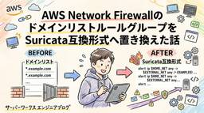
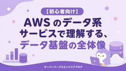
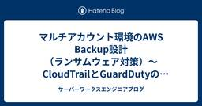
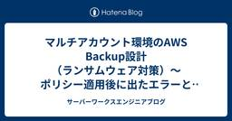
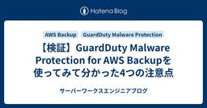

サーバーワークスエンジニアブログ
https://blog.serverworks.co.jp/
AWSトップエンジニア数「AI」「セキュリティ」部門で国内No.1のサーバーワークスのエンジニアが、AWSに関する技術情報をお届けします。
フィード

CloudWatch アラームの warm-up period で起動直後の誤発報を止めてみた
サーバーワークスエンジニアブログ
今月誕生日の人、おめでとうございます🎉 エデュケーショナルサービス課の森純子です。 新しいEC2やサービスを立ち上げた直後、まだメトリクスが出ていないのにアラームがデータ不足で発報してしまった。そんな経験をお持ちの方は少なくないと思いますが、2026年9月1日のアップデートで、Amazon CloudWatch のアラームに warm-up period（ウォームアップ期間）を設定できるようになりました🎉 Amazon CloudWatch now supports warm-up periods for alarms（2026年9月1日） warm-up period は、アラームを作成・更…
3時間前

Amazon Bedrock AgentCore HarnessをAmazon EventBridge Scheduler、AWS Step Functionsを使い実行する
サーバーワークスエンジニアブログ
はじめに こんにちは。日本スピッツを飼っている深瀬です。白モフに日々癒されています。 前回の記事では、Amazon Bedrock AgentCore Harnessを使い、コンソールの「ハーネスをテスト」画面から手動でエージェントを呼び出し、ネットワーク構成図を生成できることを確認しました。 今回はAmazon EventBridge SchedulerとAWS Step Functionsを組み合わせ、Amazon Bedrock AgentCore Harnessを実行できるかを検証します。 料金 今回追加で発生するのはStep FunctionsとEventBridge Schedul…
9時間前

AWS Network FirewallのドメインリストルールグループをSuricata互換形式へ置き換えた話
サーバーワークスエンジニアブログ
クロスインダストリー第1本部の京極です。 皆さん、AWS Network Firewallは使っていますか！ 最近は、Transit GatewayとAWS Network Firewallをよく触る機会に恵まれている私ですが、とあるプロジェクトでAWS Network Firewallルール形式の変更を検討する機会がありました。 今回は AWS Network Firewallのルールを標準形式ルールからSuricata互換形式への切り替えにおいて、 Suricata互換形式の使い方 標準形式ルールからの切り替え の2つを検証してみましたのでご紹介します！ この記事で書いていること 前提とな…
20時間前

ALB のラウンドロビンは「どこ」で行われるのか
サーバーワークスエンジニアブログ
こんにちは😺アプリケーションサービス部の山本です。 いつも読んでくださり、ありがとうございます！ ALB のラウンドロビンは「どこ」で行われるのか 前提：load balancer node とは 結論：振り分け先は 2 か所で決まる 1. ① どの load balancer node に届くのか node は AZ ごとに 1 つ、ではない どの IP を使うかを決めるのはクライアント DNS 応答に載るのは最大 8 個 Route 53 はどこに登場するのか 2. ② node の中で何が起きるのか ターゲット選択は 2 段構え ラウンドロビンの定義 他のアルゴリズムと注意点 3. クロ…
1日前
Aurora DSQL で外部キー制約がついに使えるようになったので ON DELETE の挙動を全部試してみた
サーバーワークスエンジニアブログ
はじめに この記事で学べること 前提知識・条件 外部キー制約と参照アクションのおさらい やってみた 準備：親テーブルの準備 ON DELETE RESTRICT（削除をブロック） ON DELETE NO ACTION（デフォルト。違反ならエラー） DEFERRABLE INITIALLY DEFERRED でチェックを遅らせてみる ON DELETE CASCADE（子も一緒に削除） ON DELETE SET NULL（参照列を NULL に） ON DELETE SET DEFAULT（参照列をデフォルト値に） Aurora DSQL 特有の注意点 CASCADE / SET NULL …
1日前
NLBのセキュリティグループ参照でつまずいた話
サーバーワークスエンジニアブログ
AWSのNetwork Load Balancer（NLB）構築におけるセキュリティグループの設定方法を、初心者向けに解説。IPアドレス指定とセキュリティグループ参照の違いや、クライアントIP保持を有効にした場合の通信の許可について深掘りします。
1日前

draw.ioの出力形式「Embedded XML in PNG」とはなにか？仕組みと仕様を調べてみた
サーバーワークスエンジニアブログ
はじめに 「Embedded XML in PNG」とは何か？ 公式UIでの表記と保存方法 なぜPNGなのに編集ができるのか？ 通常PNGとの違い・ファイルサイズ検証 拡張子「.drawio.png」について セキュリティとデータの扱いについて まとめ おわりに はじめに こんにちは！クロスインダストリー第2本部の佃です。 今回は、構成図やフローチャートなどの作成でよく使われる draw.io の「仕様・出力形式」について取り上げていきます。 draw.ioには、エクスポートしたPNG画像をそのまま後から編集できる機能があります。 今回はこの機能について、公式ドキュメントの仕様である 「Emb…
1日前

【初心者向け】AWS のデータ系サービスで理解する、データ基盤の全体像
サーバーワークスエンジニアブログ
【初心者向け】AWSのデータ系サービスで理解するデータ基盤の全体像 はじめに こんにちは。アプリケーションサービス部 ディベロップメントサービス4課の大橋です。 AWS Certified Data Engineer - Associate（DEA）の試験勉強をしていました。（追記: 合格しました） 勉強を始めて気づいたのですが、AWS のデータ系サービスにはかなりの数があります。 S3からはじまり、Glue、Athena、Redshift、Kinesis、Amazon QuickSight、Lake Formation……。個別にサービスを覚えようとすると、それぞれの関係がよく分からないまま…
2日前

マルチアカウント環境のAWS Backup設計（ランサムウェア対策）〜CloudTrailとGuardDutyの利用料増加と対処〜（第4回）
サーバーワークスエンジニアブログ
マルチアカウント環境のAWS Backup設計（ランサムウェア対策）〜おまけ・CloudTrailとGuardDutyの利用料増加と対処〜（第4回） ソリューションアーキテクト1課の櫻井です。 第1回から第2回、第3回にかけて、マルチアカウント環境でのAWS Backupによるランサムウェア対策について、暗号鍵・全体構成・運用の観点でまとめてきました。最終回となる今回は、バックアップの本稼働を開始した後に発覚した、想定外のコスト増加とその対処についてです。 結論から書くと、原因はAWS BackupがS3バックアップ時にオブジェクトのACLとタグを取得する仕様でした。このAPI呼び出しがClo…
2日前

マルチアカウント環境のAWS Backup設計（ランサムウェア対策）〜ポリシー適用後に出たエラーと対処〜（第3回）
サーバーワークスエンジニアブログ
ソリューションアーキテクト1課の櫻井です。 第1回で暗号鍵（KMS）の制約を、第2回で実際の構成と実装をまとめました。第3回は運用編です。設計どおりにAWS Organizationsのバックアップポリシーを各アカウントへ適用したのですが、適用後にいくつかのエラーが出ました。今回はそのエラーと対処をまとめます。設計が正しくても、既存リソースの状態や他サービスの仕様とぶつかって初めて表面化する問題があり、ここが運用の入り口で一番つまずいたところです。 前提は第1回・第2回と同じです。固有の情報は伏せ、構成は一般化しています。 RDSのバックアップウィンドウとの競合 CloudFormationス…
2日前

マルチアカウント環境のAWS Backup設計（ランサムウェア対策）〜全体構成と実装〜（第2回）
サーバーワークスエンジニアブログ
ソリューションアーキテクト1課の櫻井です。 第1回では、当初目指していたクロスアカウント集約が暗号鍵（KMS）の制約で素直に成立せず、最終的に見送ったところまでを書きました。第2回はその判断を受けて、実際にどう構成し、どう実装したかをまとめます。 前提は第1回と同じで、数十アカウントを束ねるAWS Organizations環境です。各ゲストアカウントにEC2・RDS・Aurora・S3などが分散しています。固有の情報は伏せ、構成は一般化しています。 構成の全体像 AWS Organizationsのバックアップポリシーによる一元管理 2つのバックアップボールト ボールトロックによる改ざん対策…
2日前

マルチアカウント環境のAWS Backup設計（ランサムウェア対策）〜暗号鍵(KMS)の制約とクロスアカウントバックアップ〜（第1回）
サーバーワークスエンジニアブログ
ソリューションアーキテクト1課の櫻井です。 近頃、ランサムウェア被害のニュースが後を絶ちません。やっかいなのは、攻撃者がまずバックアップを狙って削除・暗号化してくる点です。「バックアップさえ取っていれば安心」という時代ではなくなってきました。 今回、数十アカウントを束ねるAWS Organizations環境で、ランサムウェア対策としてのAWS Backupを設計しました。本シリーズではその知見を、暗号鍵／全体構成と実装／運用／コストの4回に分けてまとめます。 第1回は暗号鍵（KMS）です。なぜここを最初に持ってきたかというと、今回の構成は「こうしたかったが、鍵の制約でこうせざるを得なかった」…
2日前

【検証】GuardDuty Malware Protection for AWS Backupを使ってみて分かった4つの注意点
サーバーワークスエンジニアブログ
【検証】GuardDuty Malware Protection for AWS Backupを使ってみて分かった4つの注意点 はじめに こんにちは！ エデュケーショナルサービス課の三角（みすみ）です。 2026年5月のAWSアップデートで、GuardDuty Malware Protection for AWS BackupがS3の継続的バックアップ（PITR）に対応しました。バックアップの中にマルウェアが紛れ込んでいないか、そして「どの時点まで遡れば安全か」を特定できる機能です。 GuardDutyのマルウェア検知は、既知のマルウェアと照合するシグネチャベース検知（YARAルール、ファイル…
2日前

【AWS Security Agent】GitHub リポジトリのみを指定した脅威モデリング機能の検証 ― OWASP Juice Shop の既知脆弱性を利用し、生成された脅威の根拠をソースコードで確認
サーバーワークスエンジニアブログ
こんにちは、テクニカルサポート課の坂本（@t_sakam）です。前回の AWS Security Agent のブログでは、ペネトレーションテスト機能の検証を行いました。 blog.serverworks.co.jp 今回は、2026 年 6 月に発表された 脅威モデリング機能 について検証を行いたいと思います。 aws.amazon.com ※ 執筆時点（2026 年 8 月）では、AWS Security Agent は AWS Continuum の一部となっています。また、Security Agent の脅威モデリング機能は、現在、パブリックプレビューとして案内されています。 目次 目…
2日前

ALBリスナールールでCookieヘッダーを条件にアクセス先サーバーを振り分けてみた
サーバーワークスエンジニアブログ
こんにちは！MS部テクニカルサポート課の生子です。 今回は、Cookieヘッダーを条件にApplication Load Balancer（ALB）のリスナールールを設定し、ブラウザのデベロッパーツール等でCookieを設定することで、接続先のサーバーを指定できるようにしてみました。 通常、ALBの背後に複数のサーバーを置くと、リクエストはロードバランサーによって自動的に振り分けられるため、どのサーバーに接続されるかをクライアント側から指定することはできません。 しかし、開発中の動作確認や不具合調査の場面では「特定のサーバーだけに接続して挙動を確認したい」ことがあるかと思います。こうしたケース…
2日前
AWS Backupで手動バックアップを取得し、ライフサイクルを柔軟に管理する
サーバーワークスエンジニアブログ
はじめに AWS Backupのオンデマンド取得とは 取得手順：手動バックアップの取得と保持期間の設定 後から保持期間を変更する 注意点 まとめ はじめに こんにちは！クロスインダストリー第二本部の加治屋です。 AWS Backupというと「定期的なバックアップを自動で取得・管理してくれるサービス」というイメージが強いかもしれませんが、実は作業前などに単発で取得する手動バックアップにも使用することができます。また、保持期間をバックアップごとに柔軟に設定できるため、バックアップのライフサイクル管理にも対応できます。 本記事では、AWS Backupを使って手動バックアップを取得し、あわせて保持期…
2日前
「LIMITをつければ安くなる」と思っていたら誤解でした、Amazon Athenaのクエリ料金の話
サーバーワークスエンジニアブログ
こんにちは。クロスインダストリー第1本部クラウドコンサルティング2課の清水です。 業務でAWS CloudTrailのログをAmazon Athenaで分析する機会がありました。分析対象のログはそれなりのボリュームがあり、クエリの料金が気になったので「とりあえずLIMIT句をつけておけば、スキャンする量も減って安くなるだろう」と考え、LIMIT 100などをつけてクエリを実行していました。 ところが後で調べてみると、これは誤解でした。AthenaのLIMIT句は、返ってくる結果の行数を制限するだけで、Athenaが課金対象とする「スキャンしたデータ量」を減らす仕組みではありません。つまり、私が…
2日前
Route 53にて「CharacterStringTooLong (Value is too long) encountered with {Value}」が出た際の対処方法
サーバーワークスエンジニアブログ
最近部屋のエアコンの効きが悪くなってきており、危機感を覚えている荒井です。 メール配信元のドメインにDKIM（DomainKeys Identified Mail、送信ドメイン認証の仕組み）を設定するとき、配信サービスから渡されたDKIM鍵をAmazon Route 53のTXTレコードに登録しようとして、こんなエラーで止まったことはないでしょうか。 CharacterStringTooLong (Value is too long) encountered with {Value} 私もこれに当たりました。AWSの公式ナレッジセンター記事を読むと解決策自体はすぐ見つかるのですが、そのコメント…
2日前
Amazon Route 53 ResolverインバウンドエンドポイントとDHCPオプションセットで、DNS Firewallを共通VPCに集約する方法を実機検証した
サーバーワークスエンジニアブログ
こんにちは。クロスインダストリー第1本部クラウドコンサルティング2課の清水です。 以前、「共通(アウトバウンド)VPCにDNS Firewallルールグループを1つだけ関連付ければ、配下の個別VPCすべての名前解決を一括でフィルタできるのでは」という設計を実機で検証しました(詳しくはこちらの記事で解説しています)。この「転送ルール方式」は、個別VPCから共通VPCへ、特定ドメイン宛のDNSクエリだけをResolverの転送ルールで送り込む仕組みです。ところが検証の結果、DNS Firewallは「関連付けたVPC自身が送出するDNSクエリ」しか評価せず、転送ルールで共通VPC側に送り込んだクエ…
2日前
Amazon Quick on Desktopで会社のPowerPointテンプレートに準拠した資料を自動生成する
サーバーワークスエンジニアブログ
AI推進課の加藤（さ）です。 情報収集して要約し、テンプレートに落とし込んで共有する、という定型作業は、誰しも日常的に抱えているかと思います。 今回はこの作業を、毎日のAWSアップデートの情報収集をテーマにして、Amazon Quick on Desktopで自動化してみました。 AWSの前日分アップデートを収集し、日本語に要約し、会社の PowerPointテンプレートに沿った資料を生成してSlackに投稿するところまでを、コードを書かずに自然言語の指示だけで設定しています。 Amazon Quick on Desktop とは 前提条件 作成したもの 設定例 1. 最新のアップデート情報を…
2日前
aws_s3 拡張 AuroraからS3へのエクスポート【SSE-KMS暗号化バケット】
サーバーワークスエンジニアブログ
はじめに こんにちは、サメ映画をこよなく愛する梅木です。某家具店のサメのぬいぐるみを購入し毎日のように癒されています。 今回のブログでは、前回記事の実践編として、SSE-KMS暗号化されたS3バケットへのエクスポートという実際の本番ワークロードに近い構成での構築手順を解説します。 はじめに aws_s3 拡張機能とは 構成図 検証 事前準備 手順 1. KMS カスタマー管理キー（CMK）を作成する 2. S3 バケットを作成する（SSE-KMS + CMK） 3. IAM ポリシー＆IAM ロールを作成する 4. IAM ロールを Aurora クラスターに付与する 5. aws_s3 拡張…
2日前
Claude CodeのSkill frontmatterガイド—全20項目とベストプラクティス
サーバーワークスエンジニアブログ
はじめに こんにちは、久保(賢)です。 Anthropicの認定資格 Claude Certified Architect Foundations(CCAR-F) のための学習を進める中で、Claude CodeのSkill frontmatterについて知らないことが多かったため内容をまとめました。 2026年8月28日時点で、Claude Codeが受け付けるトップレベルのfrontmatterは全部で20項目です。 ただし、オープン仕様のAgent Skillsで定義されているのは6項目だけです。 本記事では、Claude Code公式のfrontmatterリファレンスとAgent S…
2日前

移行系プロジェクトにおける「移植」のフローをどう構築し、どう AI と人間は分業したか？その2
サーバーワークスエンジニアブログ
移行系プロジェクトにおける AI 活用事例の紹介記事です。実例ベースで、実装したワークフローでどのように業務遂行したかご紹介します。本記事は第二弾で、ワークフローの設計・実装を判断する背景の部分にフォーカスします。
2日前

移行系プロジェクトにおける「移植」のフローをどう構築し、どう AI と人間は分業したか？その1
サーバーワークスエンジニアブログ
移行系プロジェクトにおける AI 活用事例の紹介記事です。実例ベースで、実装したワークフローの概要を紹介します。本記事は実例の説明にフォーカスした第一弾となります。
2日前
管理アカウントに触れずにマルチアカウントのFinOpsを実現する ― CUR × Compute Optimizer × Quick Suite
サーバーワークスエンジニアブログ
こんにちは。山科です。 ガバメントクラウド環境では、Organizationsの管理アカウントがデジタル庁の管理下にあるため、利用者側で管理アカウントの設定を変更できません。ところがAWSのコスト管理機能は「管理アカウントで組織全体をまとめて見る」という前提のものが多く、この前提が崩れると途端に選択肢が狭まります。 マルチアカウント環境のFinOpsをこの制約下でどう実現するか調べてみたところ、正面から扱った情報が見当たりませんでした。そこで実際に検証環境を構築して「AWSネイティブ機能だけでどこまでできるか」を確かめてみました。 結論としては、管理アカウントに一切触れずにコストと最適化提案を…
2日前
DNS Firewallの評価はどこで行われるのかを実機の対照実験で確かめてみた
サーバーワークスエンジニアブログ
こんにちは。クロスインダストリー第1本部クラウドコンサルティング2課の清水です。 複数のVPCを、外部通信をまとめて出す「共通(アウトバウンド)VPC」に集約する構成は、NAT GatewayやAWS Network Firewallの一元管理を目的によく採用されます。この構成に「Amazon Route 53 Resolver DNS Firewall」(以下、DNS Firewall)も乗せて、共通VPC側に1箇所だけルールグループを関連付ければ、配下の個別VPCすべての名前解決を一括でフィルタできるのではないかと考えて設計を進めていたのですが、実は機能しない可能性があることが分かってきま…
2日前
S3バッチオペレーションで既存オブジェクトをクロスアカウント一括コピーしてみた
サーバーワークスエンジニアブログ
はじめに こんにちは、サメ映画をこよなく愛する梅木です。最近のお気に入りはサメと組み合わさったタイプの可愛らしい猫です。 今回は、S3バケット間で大量の既存オブジェクトを一括コピーしたいというケースで活躍する「S3バッチオペレーション」を、実際のプロジェクトで多いクロスアカウント・KMS暗号化ありの構成で試してみました。 はじめに S3バッチオペレーションとは やってみよう！ 全体の構成図 （事前準備）S3バケットの作成 手順1：KMSキーを作成する 手順2：バッチオペレーション用のIAMロールを作成する 手順3：宛先アカウント側のキーポリシー・バケットポリシーを更新する 手順4：バッチオペレ…
2日前
IAM Identity Center × Amazon Bedrockで ChatGPTと Codex を使う
サーバーワークスエンジニアブログ
はじめに 1. AWSマネジメントコンソールで準備する 許可セットとモデル 2. モデルの有効化 3. SSOログインをしてAWSプロファイルを設定する 4. ChatGPT と Codex CLI をインストール 5. GPTの設定ファイルを編集する 5. 利用開始 （補足） Claudeと一緒に使う場合の権限の例 まとめ はじめに こんにちは。アプリケーションサービス本部ディベロップメントサービス3課の北出です。 前回の記事 ではIdentityCenterを使って、APIキーではなく、SSOを使った一時的な認証情報で安全にBedrock経由でClaudeを利用する方法を紹介しました。 b…
3日前

Claude Code更新 restrictedモード追加・feedback自動下書き【8/21〜27】
サーバーワークスエンジニアブログ
はじめに サーバーワークスの池田です。 今週（8/21〜8/27）のClaude Codeは、v2.1.238からv2.1.250まで10バージョンがリリースされました（v2.1.242、v2.1.244、v2.1.249はスキップ）。CI・自動化環境向けの制限モードや、Claudeが自発的にフィードバックを下書きする新機能など、運用面の改善が目立つ1週間でした。 この記事で分かること コマンド実行系ツールを丸ごと無効化する--restrictedモードの中身と、有効化される制約 Claudeがセッション内の問題を自発的に検知して下書きするSendFeedbackツールの使い方 クロスセッショ…
4日前
Cognito 認証失敗時の通知を実現するため、Plus プランを導入して通知検証してみた話
サーバーワークスエンジニアブログ
はじめに Amazon Cognito で認証失敗が発生した際に通知を飛ばしたい、という要件がありました。 具体的には以下の構成を想定していました。 Cognito ユーザープールにサードパーティ製アプリケーションを OAuth クライアントとして連携 ユーザーがログインに失敗し、アカウントがロックされた場合に管理者へ通知したい Cognito Plus プラン（Advanced Security）は使わずに実現したい 結論から言うと、Plus プランなしでの完全自動化は難しく、最終的に Plus プランを採用しました。この記事では調査の過程と、Plus プランで実現できた内容をまとめます。 …
5日前